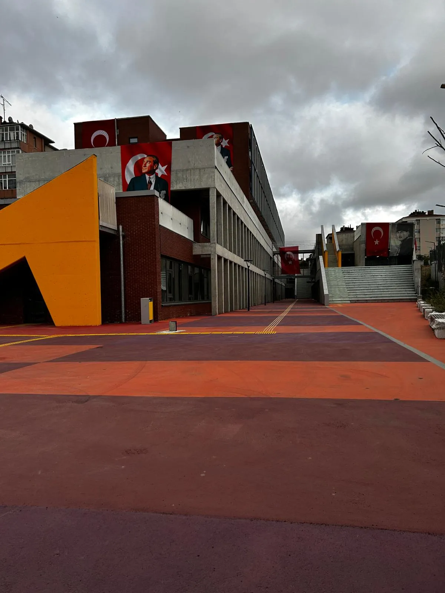
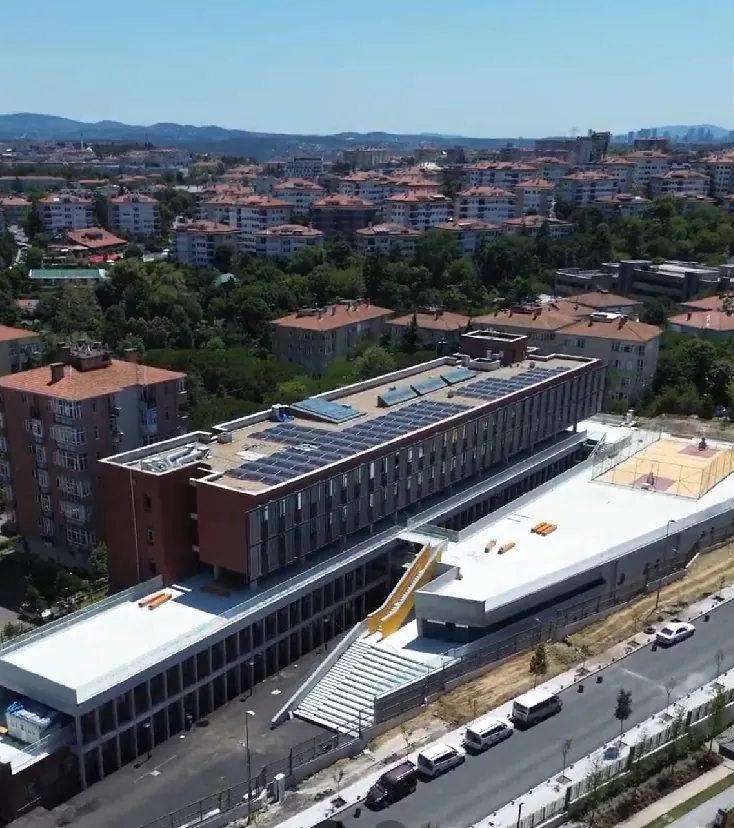
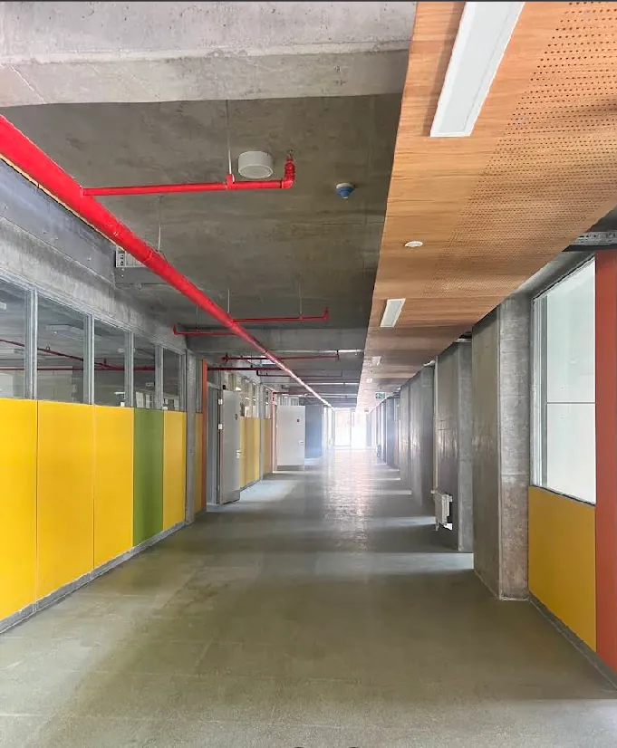
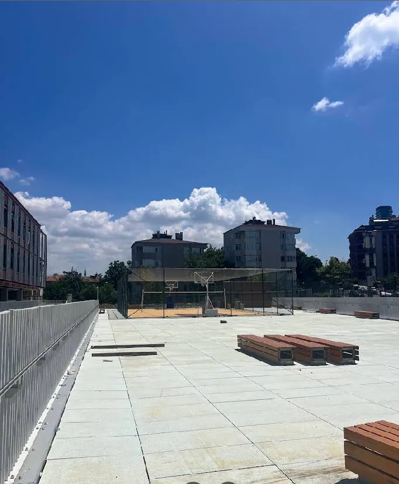
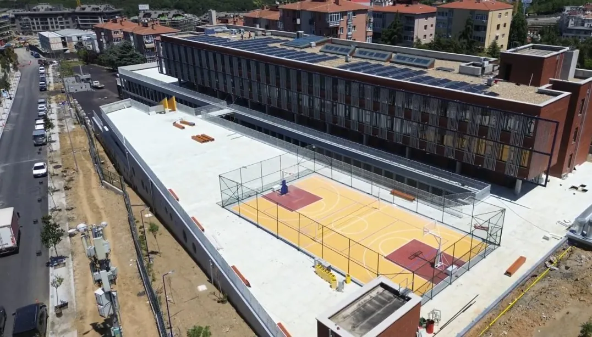
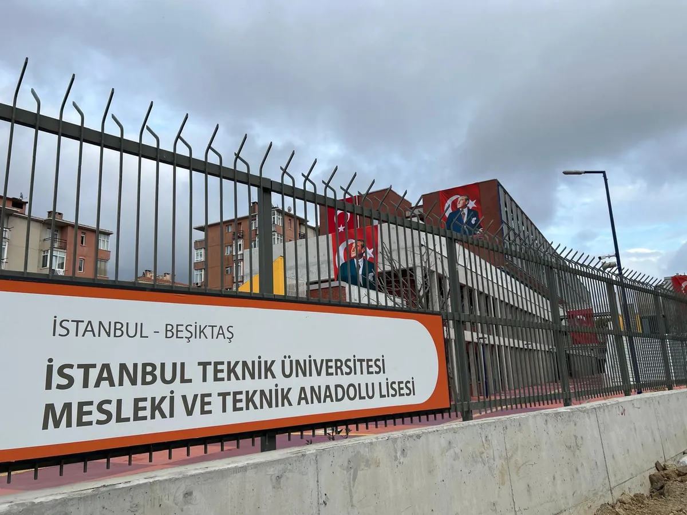
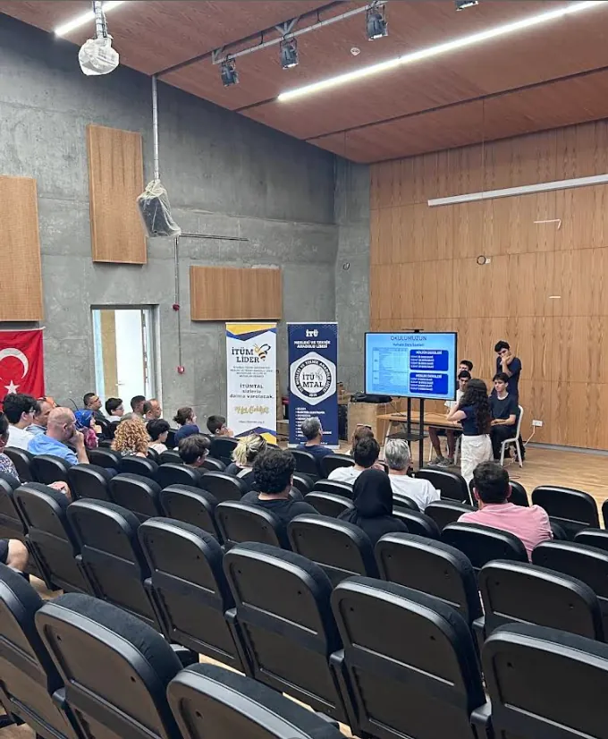

Yeni binamız · Etiler, Beşiktaş
Teknolojiyi lisede, İTÜ ile birlikte öğrenin.
Yapay zekâ, siber güvenlik, bilişim ve elektrik-elektronik alanlarında eğitim veren okulumuzu öğrencilerinizle birlikte yerinde tanıyın.
- Ortaokul grupları için
- Günde en fazla 120 öğrenci
- Hafta içi ziyaret

Dört alan, her birinde yılda 30 öğrenci
Okulda çalışan proje takımı
Mezunlarımızın bir lisans programına yerleşme oranı
2025-2026'da Erasmus hareketliliğine katılan öğrenci
Eğitim alanlarımız
Geleceğin teknolojilerine yönelik dört alan.
Okulumuz öğrencilerini Liselere Geçiş Sistemi (LGS) ile alır. Her alana yılda 30 öğrenci kabul edilir; öğrenciler uzmanlaşmaya ve uygulamaya dayalı bir ortamda yetişir.
-
Yapay Zekâ
Programlama ve veriyle çalışmanın temelleri üzerine kurulu; öğrenen sistemleri anlamaya ve geliştirmeye yönelik eğitim.
Kontenjan: 30 -
Siber Güvenlik
Ağların ve bilgi sistemlerinin nasıl korunduğunu uygulamalı olarak öğrenen, güvenlik bilinci yüksek bireyler.
Kontenjan: 30 -
Bilişim Teknolojileri
Yazılım geliştirme odaklı; algoritma, programlama ve uygulama geliştirme üzerine proje temelli eğitim.
Kontenjan: 30 -
Elektrik-Elektronik Teknolojisi
Devreler, ölçme ve endüstriyel sistemler üzerine atölye ve laboratuvar ağırlıklı eğitim.
Kontenjan: 30
İstanbul Teknik Üniversitesi ile
Lise yıllarında üniversiteyle tanışmak.
Okulumuz, Millî Eğitim Bakanlığı ile İstanbul Teknik Üniversitesi arasında imzalanan protokolle kuruldu ve İTÜ ile güçlü bir iş birliği içinde çalışıyor.
-
İTÜ öğrenci kartı
Öğrencilerimiz kendilerine verilen İTÜ öğrenci kartlarıyla üniversitenin kampüslerine girebiliyor ve üniversite öğrencilerine sunulan çeşitli imkânlardan yararlanabiliyor.
-
Akademisyenlerle çalışma
İTÜ akademisyenlerinin verdiği dersler, seminerler ve proje çalışmalarındaki mentörlükler öğrencilerimizin akademik ve mesleki gelişimini destekliyor.
-
Üniversitenin atölyeleri
Alan dersleri gerektiğinde İTÜ'nün atölye ve laboratuvarlarında işlenebiliyor; öğrenciler gelişmiş teknolojik altyapıyı daha lisedeyken kullanıyor.
Erasmus akreditasyonu
2025-2026'da 60'tan fazla öğrenci Erasmus hareketliliğine katıldı; 2026-2027 için hedef 100 öğrenci.
Okula özgü projeler
Meslek ahlakı, kültürel birikim ve üniversite hedefini birlikte güçlendiren projeler:
- Ahilik Takımları
- Nasreddin Hoca Akademi
- Hedef İTÜ
Kampüs
Etiler'deki yeni binamız.
2026-2027 eğitim öğretim yılını yeni binamızda karşılıyoruz. Bina; öğrencilerin akademik, mesleki, sosyal ve sportif gelişimini destekleyecek şekilde tasarlandı.



- 22Derslik
- 17Alan atölyesi ve laboratuvarı
- 1Bilişim teknolojileri sınıfı
- Fizik, kimya ve biyoloji laboratuvarları
- Proje atölyeleri
- Kapalı spor salonu
- Kütüphane ve yemekhane
- Sosyal ve ortak alanlar


Ortaokullar için
Okulumuzu yerinde görün.
Öğrencilerinizle birlikte tanıtım ziyaretine gelin. Başvurunuzu çevrim içi yapın, gün ve saati rehberlik servisimizle birlikte netleştirelim.
- 1
Başvurun
Okulunuzu, öğrenci sayınızı ve size uygun en fazla üç günü formdan iletin.
- 2
Birlikte planlayalım
Rehberlik servisimiz sizinle iletişime geçer; ziyaret günü ve saati birlikte belirlenir.
- 3
Okulumuza gelin
Binamızı gezin, alanlarımızı ve öğrencilerimizi yakından tanıyın.

Konum
Bize ulaşın.
Okulumuz yeni adresinde, Etiler'de. Ziyaretinizden önce rehberlik servisimiz sizinle iletişime geçerek gün ve saati netleştirir.
İTÜ Mesleki ve Teknik Anadolu Lisesi
- AdresAkat Mah. Zeytinoğlu Cad. No:80
Etiler, Beşiktaş / İstanbul - Telefon0212 261 24 20
- E-postaitumtal@itu.edu.tr